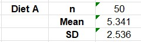
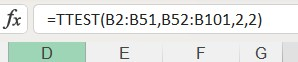

For comparison, Diet A summary measures of median, quartiles and interquartile range:

Diet B:
Again, Diet A seems to be better as it has a higher median, and its lower interquartile range means it is consistently better than Diet B.
GitHub-hosted version: butterworthc.github.io/RMPP/e-Portfolio.html
Online repository, showing commit descriptions: https://github.com/ButterworthC/RMPP
This unit introduced the module and went into the types of reasoning, including deductive and inductive, in the context of the scientific method. The concept of research ethics was also introduced, along with the following two codes of ethics/conduct:
I found the Association for Computing Machinery's Code of Ethics (ACM, 2018) and its case studies (ACM, n.d.), and the British Computer Society's Code of Conduct (BCS, 2022), to be rooted in common sense but, as BCS admits: "It is expected that these rules and professional standards will be higher than those established by the general law and that they will be enforced through disciplinary action which can result in expulsion from membership." In other words, these rules are toothless. A statutory framework would have more of a bite and would help close the gap in compliance.
The above (ACM, 2018; BCS, 2022) were just two governance frameworks but a recent paper (Corrêa et al., 2023) examines 200 such frameworks, in the form of a survey of surveys, aiming "to determine whether a consensus exists regarding the normative discourse presented in ethical guidelines surrounding AI development" and concluding (like me) that there is a "need for comprehensive and enforceable frameworks to guide ethical AI development and usage."
The authors extracted from the literature a set of 17 principles, which they listed as:
"accessibility, accountability, auditability, beneficence/non-maleficence, dignity, diversity, freedom/autonomy, human-centeredness, inclusion, intellectual property, justice/equity, open source/fair competition, privacy, reliability, solidarity, sustainability, and transparency/explainability."
(Corrêa et al., 2023)
Although this list of principles was virtually universal, there were differences in emphasis from region to region, according to cultural variations. In the western world, the reverence for individuality causes the prioritization of principles such as dignity, freedom/autonomy and privacy, whereas in the eastern world, where individuality is more likely to be subsumed by collective interests (Hofstede, 2011), principles such as accountability, auditability, reliability and solidarity are favoured (Corrêa et al., 2023).
The analysis was multidimensional, cutting across the above regional cultural variations and existing legislation in different countries, also considering each paper's type (which I think means research vs review), the regulations it advocates, its normativity, and the perceived urgency of the study. Another dimension was the type of code the different researchers wanted their proposed regulations to form, divided into legislation, voluntary codes, and "recommendation," which I take to be neither of the preceding. Another was "normative strength," which the authors define as the split between recommendations for guidelines and for legally binding regulations, which confused me because the previous dimension seems to have covered that. The final dimension was "impact scope," by which the authors meant the timescale over which each paper's AI type will be relevant, divided into "long-termism," "short-termism" and a third category for both.
I found the analysis of all this data in its multiple dimensions to be quite crude, not made more sophisticated by the presentation of the results in Power BI™. The authors found regional variations in the numbers of papers published and commented on the rapid growth of these in China relative to the United States, also observing the dominance of India in the AI field. In my opinion it would be enough to have representative papers from each region for comparison of their priorities, without spending too much time comparing their volumes. I feel I am justified in this by the authors' contrast between the number of papers from Africa (one!) and the number of "African Union member states [which] possess data protection and privacy legislation" (seventeen) (Kiemde & Kora, 2022). However, the lack of activity in the United States could be attributed to the prevalence there of a developing country environment where regulation is kept to a minimum in order to release entrepreneurial forces (Schaake, 2024).
I was surprised to see that only 25% of the papers were from academic institutions. The most prolific organisations were governments, private corporations (also a surprise), NGO's and non-profits. It is good to see that the industry is not afraid to police itself. The next categories were international organisations, and at 13%, professional associations, which makes sense, as there are only one or two relevant ones in each country (AAAI, 2025).
The authors see the average "normative strength" as low:
This lack of convergence to a more "government-based" form of regulation reflects in the normative strength of these documents, where the vast majority (98%) only serve as "soft laws," i.e., guidelines that do not entail any form of a legal obligation…
(Corrêa et al., 2023)
I did not see much value in the impact scope, or timescale analysis. The fact that academic institutions look further ahead than companies seems unsurprising and natural to me.
After going through these dimensions, the authors note that only about half the papers reviewed actually declared their objectives, and that "most of the documents only prescribe normative claims without the means to achieve them" (Corrêa et al., 2023). I think I might have excluded many of the papers that failed to make strong cases for their codes. With only 200 papers this review was never going to be exhaustive anyway.
In the final remarks of Corrêa et al. (2023), there seems to be a lack of firm conclusions as to how to harmonise AI codes of ethics worldwide, although their identification of 17 principles would make a good starting point for further analysis. If I were conducting this, I would grade each paper according to each of those principles and then develop a logical ontology called "AI Ethics" or something similar, which could be used to develop a "common ground" set of principles, and identify areas in which haggling could take place between organisations seeking to produce a unified code of ethics or even supranational legislation.
Unlike the above paper, the British Computer Society's explanation of ethics in AI (Deckard, 2023) is not a review paper and does not appear in a peer-reviewed journal but is a page on the BCS website explaining AI ethics to those considering getting into the field. It does emphasise that AI is an evolving field and that the ethical framework surrounding it must evolve too. The paper encourages those in the field of AI to get involved in the development of an ethical framework. I do not see how anyone could object to its recommendations to understand ethics, catch up with the technology and stay abreast of it, communicate, collaborate, and participate in the AI ethics debate. Perhaps the first paper and those it spawns should be a central part of this debate.
Unit 2 introduces a research question as a specific, logically arguable, and non-trivial query that drives a research project. It helps researchers keep focused, so their investigation stays relevant and keeps a coherent structure. A good research question defines the scope of inquiry, the data to be collected and how it will be analysed. Research evolves, so questions are continually refined based on findings. Mind maps can aid this process by visualizing relations between topics. Developing a good research question involves reviewing the literature, focusing on a topic, and assessing feasibility. A critical literature review is essential to identify gaps in existing studies and to provide references to cite, ensuring academic integrity. A good research question is the foundation of a methodical and useful research project.
I think I can make use of the background research for the literature review by basing the project on the same topic.
From the list of available topics, I have chosen "3. Implementing Machine Learning tools and/or techniques in: Medication safety analysis"
I hope I am not tying myself to this topic if I progress to do a master's project, but since I am not even enrolled for an MSc yet, this should not be a problem.
Unit 3 established that choosing a research methodology requires an understanding of the underlying assumptions. Saunders et al. (2023) highlight ontological, epistemological, and axiological assumptions that drive research design, by planning how to answer research questions. Research design can be exploratory (open-ended) or conclusive (focused), including descriptive research, which aims to analyse specific elements. Research methods include qualitative (exploring experiences), quantitative (analysing numerical data), and mixed methods. Data collection involves primary (direct sources) and secondary (existing literature) research. Techniques include surveys, interviews, case studies, and observations. Pre- and post-testing help assess changes over time. Selecting the right method ensures accurate data collection and interpretation. Statistical analysis applies to numerical data, while qualitative insights require careful interpretation. Combining methods, like interviews guiding surveys, improves research quality.
The first research method to be employed will be Exploratory Research Design, because to investigate the current state of the art of this complex topic
it will be necessary to identify patterns, capabilities, and gaps in the application of machine learning to the problem of adverse drug reactions
(Dawson, 2015: 22-37).
Then Mixed Methods Research will encompass the analysis of both quantitative data such as ADR frquencies, ML model performance metrics (Saunders et al., 2023: 176-178),
and benchmarking results; and qualitative data such as data harmonisation, interpretation standards, and ethical aspects (Dawson, 2015: 38-40; Saunders et al., 2023: 179-180).
Mixing these methods allows for a holistic approach to the whole area of research.
The data collection method will be Secondary Research, as it is a survey of other studies and a synthesis of their results and conclusions. If sufficient data sources can be aggregated from these sources, then a meta-analysis might be attempted but that is not a primary objective (Saunders et al., 2023).
Skills that will be required to carry out this project will include critical reading, statistical analysis, knowledge of feature engineering and machine learning models, an understanding of the applicable ethics, and academic writing. In my own case I shall aim to improve in all of these areas.
I selected two papers on image classification:
| Image Classification with Classic & Deep Learning Techniques | A Survey on Semi- Self- and Unsupervised Learning for Image Classification | |
|---|---|---|
| Source | Lorente et al. (2021) | Schmarje et al. (2021) |
| Type | Experimental study | Survey |
| Purpose | To compare various kinds of image classifier | To "compare 34 methods in detail based on their performance" |
| Problem | Determining the most effective method under different circumstances | Scarcity of labeled data in training high-performing classifiers |
| Objective | To assess the performance of these techniques "in terms of accuracy and loss" | To identify trends, categorize existing approaches, and highlight future research directions |
| Contribution | Offering insights for researchers and practitioners in choosing suitable classifiers | Making it easier for new researchers to understand the field's progress and open challenges |
| Appropriateness of research methodology | It directly tests different classification techniques on benchmark datasets, enabling objective comparisons | A survey-based approach is appropriate since the goal is to provide a broad synthesis rather than conduct original experiments |
| Appropriateness of data collection and analysis | Uses widely accepted datasets and performance metrics | Based on reviewing past studies rather than conducting new experiments |
| Support for claims and conclusions | Includes "accuracy and loss" comparisons to justify its claims but significance testing could strengthen its conclusions | Relies on external studies to support its claims |
| Enhancements | I would test on more datasets to confirm accuracy, and change some parameters to ensure the model is optimised | Perhaps include a side-by-side comparison of methodologies, and talk more about potential biases |
For my initial post (Butterworth, 2025a) I selected the “Automated Active Response Weaponry” case study (ACM, n.d.) and listed some of the ethical lapses in it. I mentioned Asimov’s Laws of Robotics (Asimov, 1950) because they were the first attempt to give intelligent machines a rudimentary moral code. Then I listed the violations of the ACM and BCS codes (ACM, 2018; BCS, 2022), concluding that the ACM had a “technical emphasis” and that the BCS was “more concerned with professionalism” (Butterworth, 2025a).
Anda Ziemele, in his peer response (Ziemele, 2025a), drew my attention to Google’s entry into the world of military AI technology (Hooker & Vallance, 2025), which is symptomatic of an accelerating trend, and he cited a study which highlights the lack of public awareness and accountability in this sector (Haner & Garcia, 2019). However, he also tells me I “could argue that using robotic weaponry and AI can result in increased efficiency and reduced human casualties” (Ziemele, 2025a). On the subject of people’s whistleblowing obligations, he cites a study which concluded that “the greater people's concern for the well-being of the wider public, the more likely the whistleblower will release knowledge of the wrongdoing” (Dungan et al., 2019).
In his peer response, Anja Kosar acknowledged that I had identified “key ethical concerns, including harm caused by autonomous weapons, privacy violations and whistleblower retaliation” (Kosar, 2025). He was impressed by my citation of the Laws of Robotics (Asimov, 1950) and agreed with the importance of tight ethical control of AI-driven military machines (Brundage, 2018). He also cited a paper which has highlighted problems with accountability in AI systems (Sparrow, 2007).
I found this an interesting exercise and was grateful for the further insights I received from my two respondents.
Unit 4 introduced some data collection methods. Case studies involve detailed research on individuals or groups, generating hypotheses and deeper investigation of the question, but they are unsuitable for establishing causality due to researcher bias and atypical respondents, limiting generalizability. Focus groups, another qualitative method, gather insights from small groups of participants with similar backgrounds. They can answer "why," "what," and "how" questions but need careful selection of participants. Quantitative observation involves measuring, as accurately and precisely as possible, numerical physical values through experiments, processing the results by statistical analysis. Qualitative observation (as opposed to experimentation) monitors characteristics remotely, ensuring activity occurs in a natural environment. In descriptive research, researchers may observe or participate, and can therefore influence data collection approaches and the data collected.
Beth asks Ricardo to retrieve names and addresses, so she can contact people for information and permission to use it.
Unit 5 introduced interviews, surveys, and questionnaires as essential research tools. Detailed interviews, common in qualitative studies, let detailed insights be obtained from individuals. Surveys, which are more quantitative in nature, aggregate opinions and trends in various formats, including online polls. A survey is broader than a questionnaire, as it enables data to be analysed, whereas a questionnaire is just a set of questions used in surveys. Effective questionnaire design follows several key steps, such as defining respondents, question selection, and pre-testing. Closed questions offer structured, easily analysed data, whereas open questions provide insights but are harder to interpret in bulk. Ethical considerations like confidentiality are crucial. Properly designed questionnaires avoid leading, assumptive, or ambiguous questions, ensuring meaningful, reliable responses for research success.
The Cambridge Analytica scandal, where innocent-looking Facebook surveys were combined to build up psychological and political profiles of unsuspecting users (Confessore, 2018), was made possible by the lack of safeguards against such profiling activities at Facebook and by the unethical culture of what seems to have been almost a mercenary organisation whose aims were to influence the outcomes of elections (Kleinman, 2018).
A similar scandal involved the Conservative Party's polling activities during the 2019 election campaign. They used Facebook to run surveys on the National Health Service, which were then used to profile voters. At the time a solicitor was quoted as saying: "In my view the Conservative Party's method of obtaining consent is invalid... this is a clear breach of the Data Protection Act 2018" (Dodds, 2019).
Ethically these activities violated Section 1.6 (Respect Privacy) of the Association for Computing Machinery's Code of Ethics and Professional Conduct (ACM, 2018). The social fallout involved the undermining of the democratic process and the loss of individual autonomy. Legally, the case hurt Facebook as they were fined $5 billion by the FTC (Federal Trade Commission, 2019). Legislation resulted from the scandal in the form of GDPR, the European Union's General Data Protection Regulation (Privacy International, 2019). From an I.T. professional standpoint, Cambridge Analytica breached the Association for Computing Machines Code of Ethics and Professional Conduct, Sections 1.2 (Avoid Harm), 1.6 (Respect Privacy) and 1.7 (Honour Confidentiality) (ACM, 2018).
This unit consisted of a couple of readings from Berenson, L. et al. (2019), the first being from Chapter 2, about visualising variables in tables and graphics. The variables and their representations are:
| Variable Type | Visualisation |
|---|---|
| Categorical | Summary Table Contingency Table |
| Numerical | Frequency Distribution Classes & Bins Relative Frequency Distribution Percentage Distribution Cumulative Distribution |
| Categorical | Bar Chart Pie & Doughnut Chart Pareto Chart |
| Numerical - one | Stem and Leaf Display Histogram Percentage Polygon Ogive |
| Numerical - two | Scatter Plot Time Series |
Examples are given in Excel™, JMP™ and Minitab™ formats.
The second reading is from Chapter 3 of Berenson, L. et al. (2019), which is about descriptive measures of numerical data, such as mean, median, mode, geometric mean, range, variance, standard deviation, z-score etc. Distributions and skewness are drawn, then quartiles, covariance and correlation.
Example 6.1: Diets A and B, worksheet Exe8.1B.xlsx
For comparison, Diet A summary measures of mean and standard deviation:

Diet B:
Not only does Diet B have a lower mean weight loss, but it also has a smaller standard deviation,
meaning that the values (weight loss) are more consistent.
Example 6.2: Diets A and B, worksheet Exe8.2B.xlsx
For comparison, Diet A summary measures of median, quartiles and interquartile range:
Diet B:
Again, Diet A seems to be better as it has a higher median, and its lower interquartile range means it is consistently better than Diet B.
Example 6.3: Brands A and B in Areas 1 and 2, worksheet Exe8.3D.xlsx
As stated in the instructions, "of the 70 respondents in Area 1, 15.7% preferred Brand A, 24.3% preferred Brand B, and the remaining 60.0% preferred some other brand of breakfast cereal."
Similarly, for Area 2, 21.1% preferred Brand A, 33.3% preferred Brand B, and the remaining 45.6% preferred some other brand of breakfast cereal.
The interpretation is that in both areas, Brand B was preferred to Brand A but that in Area 2 the preference for these brands was stronger, with a lower preference for other brands.
This unit introduced the summary measures that can be derived from datasets, and started by defining four levels of measurement, which I noticed spell out the acronym noir when placed in order of ascending informativeness. This stands for nominal and ordinal (the two qualitative measures), and interval and ratio, (the two quantitative measures). Discrete variables (integers) and continuous variables (real numbers) are discussed. Bar charts and histograms are illustrated, with examples of normal and skewed distributions. Summary measures such as mean, median, standard deviation, quartile, are defined, and then hypothesis testing is introduced. The readings in Berenson et al., 2019 go into great detail about hypothesis testing, and this was quite a heavy unit.
The Related Samples T Test
In this test, Con1 has a higher mean than Con2.
Two Tailed Test
The two-tailed p-value is 0.0183, much less than the alpha level of 0.05, so there is a statistically significant difference between Con1 and Con2.
The upper critical value for a two-tailed test at α = 0.05 is 2.262, and the t-statistic is 2.875, in the rejection zone.
Therefore the null hypothesis, i.e. that there is no mean difference between Con1 and Con2, is rejected.
So there is a difference, and the Pearson correlation of 0.8633 suggests the paired observations are strongly related.
One Tailed Test
The null hypothesis is rejected again because the one-tailed p-value is 0.0092, even lower than before, and much less than the alpha level of 0.05,
and the t-statistic of 2.875 is still in the rejection zone because the critical value for a one-tailed test at α = 0.05 is 1.833.
The Independent Samples T Test
First perform an F test to determin which form of the independent samples t test to use:

I had to do some detective work to get the right answer to this one because the instructions for LibreOffice contained an incorrect cell reference,
i.e. for I14, the value for "p2", which was given as =I11*2. I quickly noticed that this was spurious and corrected it to =I12*2.
The result is that F, 0.8385, is between the critical limits of 0.6222 and 1.6073, and that the value of P2, 0.5399, is a lot more than α, 0.05,
meaning the null hypothesis is not rejected and that at a 5% significance level, there is no significant difference in the variances.
Therefore the equal variances form of the independent samples t test should be used:

This yields a value of 0.002752, which is much smaller than 0.05, so the null hypothesis, that there is no significant difference in the means
of the datasets, is rejected and we conclude that their means are significantly different.
Assignment1-LiteratureReview.pdf
Assignment1-LiteratureReviewSummativeFeedback.pdf
Chapter 1 of Berenson et al., 2019 starts by describing the first step in data analysis, defining variables. They are either numerical, for example discrete numbers of tickets sold, continuous values of people's heights, or categorical, for example nationality. Ordering of values is defined by a measurement scale, which is called a ratio scale if it includes a zero point, otherwise an interval scale. Categorical values can be on a nominal scale, i.e. names with no order, or an ordinal scale, where categories are ranked. The collection of data is discussed, including the difference between populations (summarised by parameters) and samples (summarized by statistics), followed by data cleaning, formatting, survey errors, and random sampling, with and without replacement. Many of these ideas are presented more succinctly in the O'Reilly book on Practical Statistics we used in the Data Analysis module (Bruce et al., 2020: 47-57). Later chapters of Berenson et al., 2019 discuss business analytics and the future of data analysis.
In this collaborative learning discussion, we were asked to consider the case of a computer professional called Abi, who had been tasked with running a statistical analysis on the nutritional value of a new cereal, by a corporate client hoping to use a positive result for use in a marketing campaign. Abi’s findings are that the new cereal may not be nutritious and perhaps might even be harmful. Abi is in an ethical dilemma, caught between the interests of his client and those of the general public. In my initial post I said his view that he could use statistics to make the product look good or bad if he chose was backed up by a book on statistics (Huff, 1954). I mentioned a form of cherry-picking statistical methods called “p-hacking” (Simmons, Nelson, & Simonsohn, 2011) and quoted a guideline that statisticians should "present all relevant results, including those that might contradict the client's preferred outcome" (ASA, 2022), also citing a similar guideline about providing “full disclosure of all pertinent system capabilities, limitations, and potential problems to the appropriate parties” in ACM (2018). I finished my initial post by suggesting that Abi could seek advice from the ASA, the ACM or the British Computer Society (Butterworth, 2025b).
I responded to three initial posts. My only respondent (so far), Anda Ziemele, thanked me for my contribution to the debate, and, in response to my mentions of “p-hacking”, cited a couple of papers on the subject (Andrade, 2021; John et al., 2012). Anda suggested I could have listed Abi’s alternative courses of action, which could have included “presenting both positive and negative analyses” (Ziemele, 2025b).
Validity refers to the appropriateness of the choice of what is to be measured, and the methods for processing and interpreting the results
(Kaplan, 2005: 33-34).
Internal validity is a measure of the truthfulness of the conclusions; Interpretative validity measures the impartiality of the researcher
(Creswell & Creswell, 2018).
Generalisability or External Validity indicates the applicability of the research to other areas of study (Creswell & Creswell, 2018).
Saunders et al., (2025: 517) goes into types of validity relevant to questionnaires.
Unfortunately, the web page cited by the lecturecast, Adolphus, n.d., is no longer there.
This unit also covered Populations vs Samples, and described random and stratified random samples. Threats to validity were identified as chance, bias and "confounding,"
or errors in interpretation. Appropriate methods for qualitative and quantitative research were listed.
Exercise 9.1: Exe9.1D.xlsx

For Area 2 it was necessary to change the range of percentages on the Y axis from 50, the automatically determined top of the range, to 70,
so as to match the chart for Area 1, otherwise visual comparisons would be difficult. The interpretation, as in Example 6.3 above, is that
in both areas, Brand B was preferred to Brand A but that in Area 2 the preference for these brands was stronger, with a lower preference for other brands.
Exercise 9.2: Exe9.2E.xlsx
The heather species is far more prevalent in location A as this location has more sample points where A is abundant and fewer where A is absent.
There is not much difference in the number of samples where the species is sparse, so the result is driven by the samples at each site where the heather
is "absent" and "abundant".
Exercise 9.3: exa9.3b.xlsx
Diet A has a strong mode cluster (two adjacent bars with the most values) centred on a weight loss of 6 kg, whereas B's peak is at 3 kg.
There are also more negative values for Diet B and (visually) more variation. Diet A looks much better.
This was a brief unit with a short lecturecast but some useful readings. The most important fact was the 13,000-word limit for computing dissertations at Essex. Chapter 8 of our textbook on computing projects (Dawson, 2015: 195-238) contains helpful advice on reports, including the purpose and target audience, development strategies like planned top-down and gradual evolution, the structure of the report, the use of visual components, referencing issues etc. Pointers to good style include short chapters on concision (Wilson, 2022: 260-261), editing (Wilson, 2022: 250-252) and clarity (Wilson, 2022: 262-264). Deciding on the research question was dealt with on a university writing centre's page on research papers (Texas A & M University, n.d.).
A major part of many project reports is the presentation of results, and a commonly used tool for this is PowerBI™.
I followed the instructions for the PowerBI™ exercise and created the following 3-page report:
The PowerBI™ design interface is very confusing and will, I hope, be upgraded to incorporate some level of AI assistance.
Assignment2-ProjectProposal.pptx
Assignment2-transcript.pdf
Assignment2-ProjectProposalSummativeFeedback.pdf
The unit introduces the e-Portfolio for recording professional development, describing the reflective process and how it can lead to the development of a professional skills matrix and an action plan for the future. The main reading was the university's own Short Guide to Reflective Writing (UoEO, n.d.), which includes some "frameworks" with varying numbers of stages and one arranged as a cycle. I found a source of information on SWOT (strengths, weaknesses, opportunities, and threats) analysis (Gibson, 2009) and also a source with an example skills matrix (Tucker & Cofsky, 1994). Both of these will be useful in producing the next artefacts.
| Personal SWOT Analysis | |
|---|---|
| Strengths |
|
| Weaknesses |
|
| Opportunities | This course will enable me to:
|
| Threats |
|
Version 1: ProfessionalSkillsMatrix.xlsx - follows the template.
Version 2, a simpler, more practical (for me) format:
| Personal Skills Matrix | ||||
|---|---|---|---|---|
| Skill Area | Current Level | Target Level | Evidence | Actions for Development |
| SQL Server programming | Advanced | Advanced | Microsoft Transcript | Stay abreast of new versions |
| Azure | Intermediate | Advanced | Microsoft Transcript | Get extensive hands-on experience, take more certifications |
| AWS | - | Competent | - | Watch some YouTube videos, do a couple of Udemy courses, build something like a data pipeline, do a certification |
| Python | Intermediate | Advanced | Kaggle certificate, w3schools certificate | Get extensive hands-on experience, experiment with ML libraries |
| Numpy | Intermediate | Advanced | w3schools certificate | Get extensive hands-on experience |
| Statistics | Intermediate | Advanced | - | Do an OU certificate or diploma in statistics |
| Artificial Intelligence | Intermediate | Advanced | PG Cert | Carry on at UoEO and get MSc in AI |
| Literature Reviews | Intermediate | Advanced | Assignment 1 Literature Review | Improve upon the points fed back in: Assignment 1 Literature Review Feedback |
| Presentation skills | Intermediate | Advanced | Assignment 2 Project Proposal | Improve upon the points fed back in: Assignment 2 Project Proposal Feedback More experience of Tableau™ |
| Teamwork | Intermediate | Advanced | Prior modules | Be in more teams |
| Personal Action Plan | ||||
|---|---|---|---|---|
| What I need to learn | How I will achieve this | Resources needed | Measure of success | Target date |
| Azure | Microsoft Courses | Time & Money | Certifications | end 2027 |
| AWS | YouTube & Udemy | Time & Money | Certifications | end 2027 |
| Python | Use in MSc project | Time | Proficiency | mid 2026 |
| Numpy | Use in MSc project | Time | Proficiency | mid 2026 |
| Statistics | OU Diploma | Time & Money | Diploma | end 2027 |
| PowerBI™ | YouTube tutorials Microsoft Courses | Time & Money | Certification | end 2027 |
| Artificial Intelligence | Study for UoEO MSc | Time & Money | MSc | mid 2026 |
We read four chapters of a project management book (Nicholas & Steyn, 2020). The first describes project management, including its features, management, functions, evolution, applicability to different industries. Chapter 3 covered the project life-cycle, with examples appropriate to software production. Chapter 6 covered planning, execution and control, with Gantt charts, also the topic of an Association of Project Management web page (APM, n.d.). Chapter 11 was about the identification and management of risks.
Assignment3ReflectivePiece.docx (same as submitted file)
AAAI. (2025) Association for the Advancement of Artificial Intelligence List of Societies. Available from: aaai.org/about-aaai/aaai-resources/ai-international/societies/ [Accessed 4 March 2025].
ACM. (2018) ACM Code of Ethics and Professional Conduct. Available from: https://www.acm.org/code-of-ethics [Accessed 31 January 2025].
ACM. (n.d.) Code of Ethics: Case studies. Available from: https://www.acm.org/code-of-ethics/case-studies [Accessed 31 January 2025].
Andrade, C. (2021) HARKing, cherry-picking, p-hacking, fishing expeditions, and data dredging and mining as questionable research practices. Journal of Clinical Psychiatry 82(1): 25941.
APM. (n.d.) What is a Gantt chart? Available from: www.apm.org.uk/resources/find-a-resource/gantt-chart/
ASA. (2022) Ethical Guidelines for Statistical Practice. Available from: www.amstat.org/ASA/Your-Career/Ethical-Guidelines-for-Statistical-Practice.aspx [Accessed 20 March 2025].
Asimov, I. (1950) I Robot. Garden City, NY: Doubleday.
BCS. (2022) BCS, The Chartered Institute for IT. The Code of Conduct. Available from: https://www.bcs.org/media/2211/bcs-code-of-conduct.pdf [Accessed 1 February 2025].
Berenson, L. et al. (2019) Basic Business Statistics: Concepts and Applications. 14th ed. Harlow: Pearson.
Bruce P, Bruce, A. & Gedeck, P. (2019) Practical Statistics for Data Scientists. 2nd ed. Sebastopol, CA: O'Reilly Media Inc.
Brundage, M. (2018). The Malicious Use of Artificial Intelligence: Forecasting, Prevention, and Mitigation. Available from: arxiv.org/pdf/1802.07228 [Accessed 23 February 2025].
Butterworth, C.J. (2025a) Research Methods and Professional Practice Collaborative Learning Discussion 1: Codes of Ethics and Professional Conduct, Initial Post. Available from: www.my-course.co.uk/mod/forum/discuss.php?d=277693 [Accessed 23 February 2025].
Butterworth, C.J. (2025b) Research Methods and Professional Practice Collaborative Learning Discussion 2: Accuracy of information, Initial Post. Available from www.my-course.co.uk/mod/forum/discuss.php?d=286863 [Accessed 30 March 2025].
Confessore, N. (2018) Cambridge Analytica and Facebook: The Scandal and the Fallout So Far. The New York Times. Available from: www.nytimes.com/2018/04/04/us/politics/cambridge-analytica-scandal-fallout.html [Accessed 6 March 2025].
Corrêa, N.K. et al. (2023) Worldwide AI ethics: A review of 200 guidelines and recommendations for AI governance. Patterns 4(10). DOI: https://doi.org/10.1016/j.patter.2023.100857
Creswell, J.W. & Creswell, J.D. (2018) Research Design: Qualitative, Quantitative, and Mixed Methods Approaches 5th ed. London: SAGE Publications.
Dawson, C. (2015) Projects in Computing and Information Systems: A Student's Guide. Harlow: Pearson.
Deckard, R. (2023) What are Ethics in AI. BCS. Available from www.bcs.org/articles-opinion-and-research/what-are-ethics-in-ai/ [Accessed 2 February 2025].
Dodds, I. (2019) Tories may have broken law in compiling voter data via polls spread on Facebook. The Telegraph. Available from: www.telegraph.co.uk/technology/2019/12/03/conservatives-used-facebook-surveys-games-hoover-voter-data/ [Accessed 10 March 2025].
Dungan, J.A., Young, L. & Waytz, A. (2019) The power of moral concerns in predicting whistleblowing decisions. Journal of Experimental Social Psychology 85: 103848.
Dunne, K. (n.d.) Personal SWOT Analysis. Available from www.mindtools.com/aaiakpy/personal-swot-analysis [Accessed 14 April 2025].
European Union (2016) Regulation (EU) 2016/679 of the European Parliament and of the Council of 27 April 2016 on the protection of natural persons with regard to the processing of personal data and on the free movement of such data, and repealing Directive 95/46/EC (General Data Protection Regulation). Official Journal of the European Union L 119, 4 May, pp. 1-88. Available from: https://eur-lex.europa.eu/eli/reg/2016/679/oj [Accessed: 19 February 2025].
Federal Trade Commission (2019) FTC Imposes $5 Billion Penalty and Sweeping New Privacy Restrictions on Facebook. Available from: www.ftc.gov/news-events/news/press-releases/2019/07/ftc-imposes-5-billion-penalty-sweeping-new-privacy-restrictions-facebook [Accessed 10 March 2025].
Gibson, R. (2009) The strategic practitioner's handbook: A practical guide to strategy tools. London: Kogan Page.
Haner, J. & Garcia, D. (2019) The artificial intelligence arms race: Trends and world leaders in autonomous weapons development. Global Policy 10(3): 331-337.
Hofstede, G. (2011) Dimensionalizing Cultures: The Hofstede Model in Context. Online Readings in Psychology and Culture 2(1). DOI: doi.org/10.9707/2307-0919.1014
Hooker, L. & Vallance, C. (2025) Concern over Google ending ban on AI weapons. BBC. Available from: www.bbc.co.uk/news/articles/cy081nqx2zjo [Accessed 5 February 2025].
Huff, D. (1954) How to Lie with Statistics. New York: W. W. Norton & Company.
John, L.K., Loewenstein, G. & Prelec, D. (2012) Measuring the prevalence of questionable research practices with incentives for truth telling. Psychological Science 23(5): 524-532.
Kaplan, B. & Maxwell, J. (2005) Qualitative Research Methods for Evaluating Computer Information Systems. Available from: www.researchgate.net/publication/226227177_Qualitative_Research_Methods_for_Evaluating_Computer_Information_Systems
Kiemde, S.M.A. & Kora, A.D. (2022) Towards an ethics of AI in Africa: rule of education. AI and Ethics 2: 35-40. DOI: doi.org/10.1007/s43681-021-00106-8
Kleinman, Z. (2018) Cambridge Analytica: The story so far. BBC. Available from: www.bbc.co.uk/news/technology-43465968 [Accessed 10 March 2025].
Kosar, A. (2025) Research Methods and Professional Practice Collaborative Learning Discussion 1 Peer Response. Available from: www.my-course.co.uk/mod/forum/discuss.php?d=277693#p529155 [Accessed 23 February 2025].
Lorente, O., Riera, I. & Rana, A. (2021) Image Classification with Classic and Deep Learning Techniques. arXiv. DOI: doi.org/10.48550/arXiv.2105.04895
Nicholas, J.M. & Steyn, H. (2020) Project management for engineering, business and technology. 6th ed. Abingdon: Routledge
Privacy International. (2019) Cambridge Analytica, GDPR - 1 year on - a lot of words and some action. Available from: www.privacyinternational.org/news-analysis/2857/cambridge-analytica-gdpr-1-year-lot-words-and-some-action [Accessed 10 March 2025].
Saunders, M., Lewis, P. & Thornhill, A. (2012) Research Methods for Business Students. 6th ed. Pearson Education Limited.
Schaake, M. (2024) Lobbying for unfettered innovation is bad for democracy. Financial Times. Available from: www.ft.com/content/ab2761bd-ace7-428b-aa3e-b7412ef69b48 [Accessed 4 February 2025].
Schmarje, L. et al. (2021) A Survey on Semi- Self- and Unsupervised Learning for Image Classification. IEEE Access. DOI: dx.doi.org/10.1109/ACCESS.2021.3084358
Simmons, J.P., Nelson, L.D., & Simonsohn, U. (2011) False-Positive Psychology: Undisclosed Flexibility in Data Collection and Analysis Allows Presenting Anything as Significant. Psychological Science 22(11): 1359-1366.
Sparrow, R. (2007) Killer Robots. Journal of Applied Philosophy 24(1): 62–77. DOI: doi.org/10.1111/j.1468-5930.2007.00346.x
Texas A & M University. (n.d.) Research Papers. Available from: writingcenter.tamu.edu/writing-speaking-guides/research-papers [Accessed 14 April 2025].
Tucker, S.A. & Cofsky, S.F. (1994) Competency-based performance improvement: A strategy for organizational change. Amherst, MA: HRD Press.
UoEO. (n.d.) A Short Guide to Reflective Writing. Available from: www.my-course.co.uk/pluginfile.php/516814/mod_resource/content/2/A%20short%20guide%20to%20reflective%20writing.pdf [Accessed 3 March 2025].
Wilson, J.R. (2022) Academic Writing. Available from: wilson.fas.harvard.edu/AcademicWriting [Accessed 14 April 2025].
Ziemele, A. (2025a) Research Methods and Professional Practice Collaborative Learning Discussion 1: Codes of Ethics and Professional Conduct, Peer Response. Available from: www.my-course.co.uk/mod/forum/discuss.php?d=277693#p528523 [Accessed 23 February 2025].
Ziemele, A. (2025b) Research Methods and Professional Practice Collaborative Learning Discussion 2: Accuracy of information, Peer Response. Available from: www.my-course.co.uk/mod/forum/discuss.php?d=286863#p551832 [Accessed 15 April 2025].
Power BI™ is a trademark of Microsoft Corporation
{kind=link}
{kind=link}
{kind=link}
{kind=link}